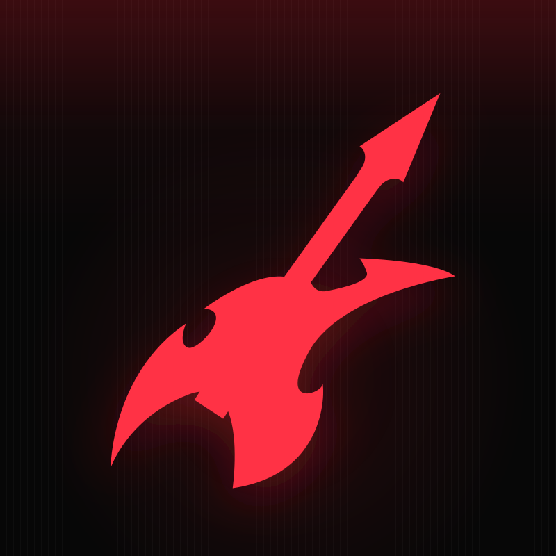

Conectando
--
ouvintes
--
qualidade
AutoDJ
modo
RADIO NO GRALE
Som alto, zero filtro. Radio privada pra ouvir no navegador ou instalar como app.

0:00
NOW PLAYING
--:--
Sua voz no ar
0:15
Microfone aberto por quinze segundos, ouvinte. Manda teu recado — a Alta Cupula te coloca no ar.
Permita o microfone quando o navegador pedir.
Historico
- O historico aparece quando o AzuraCast enviar dados.
Playlist importada
Cole um link do Spotify e clique em Tocar para baixar e colocar na radio.
Playlist Spotify
As faixas importadas aparecem aqui.
- Nenhuma playlist carregada ainda.
Estante de discos
Carregue a API local para ver suas musicas baixadas.
- Nenhuma faixa encontrada.
Minha playlist
0 faixa(s)
Ouvir e previa local. + Lista monta a selecao; Pedir na faixa envia pra radio (Tocar ja ou Na fila).
- Nenhuma faixa selecionada ainda.